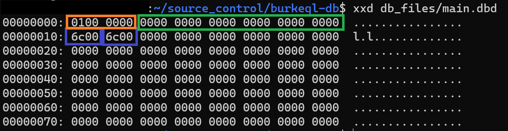

DB Page Implementation
Before we write the code that implements our Page API, we need to add a new global config parameter that tells the DB engine how many bytes a data page consumes.
I'm going to start with an absurdly small value: 128 bytes. Add this to the burkeql.conf file:
# Byte size of a data page
PAGE_SIZE=128
Next, we need to update the config.h header file to inform it of our new config parameter:
typedef enum ConfigParameter {
CONF_DATA_FILE,
+ CONF_PAGE_SIZE,
CONF_UNRECOGNIZED
} ConfigParameter;
typedef struct Config {
char* dataFile;
+ int pageSize;
} Config;
And finally, we need to make the associated updates to our functions in config.c:
void print_config(Config* conf) {
printf("====== BurkeQL Config ======\n");
printf("= DATA_FILE: %s\n", conf->dataFile);
+ printf("= PAGE_SIZE: %d\n", conf->pageSize);
}
static ConfigParameter parse_config_param(char* p) {
if (strcmp(p, "DATA_FILE") == 0) return CONF_DATA_FILE;
+ if (strcmp(p, "PAGE_SIZE") == 0) return CONF_PAGE_SIZE;
return CONF_UNRECOGNIZED;
}
static void set_config_value(Config* conf, ConfigParameter p, char* v) {
switch (p) {
case CONF_DATA_FILE:
v[strcspn(v, "\r\n")] = 0; // remove trailing newline character if it exists
conf->dataFile = strdup(v);
break;
+ case CONF_PAGE_SIZE:
+ conf->pageSize = atoi(v);
+ break;
}
}
Page API
Using the header file we wrote in the previous section, let's dive straight into the code. First, the easy ones: allocating and freeing the page block:
extern Config* conf;
Page new_page() {
Page pg = malloc(conf->pageSize);
memset(pg, 0, conf->pageSize);
return pg;
}
void free_page(Page pg) {
if (pg != NULL) free(pg);
}
It's about as straightforward as you can get. We simply allocate enough memory for a fixed-size data page and return the pointer. And we pair it with a function that frees the memory.
Now let's read a page block from disk into a Page object:
Page read_page(int fd, uint32_t pageId) {
Page pg = new_page();
lseek(fd, (pageId - 1) * conf->pageSize, SEEK_SET);
int bytes_read = read(fd, pg, conf->pageSize);
if (bytes_read != conf->pageSize) {
printf("Bytes read: %d\n", bytes_read);
PageHeader* pgHdr = (PageHeader*)pg;
/* Since this is a brand new page, we need to set the header fields appropriately */
pgHdr->pageId = pageId;
pgHdr->freeBytes = conf->pageSize - sizeof(PageHeader);
pgHdr->freeData = conf->pageSize - sizeof(PageHeader);
}
return pg;
}
Our function takes two inputs: a file descriptor and a pageId. This implies the caller will already have an open file, and it knows exactly which page block it wants to pull from disk.
First, we need to allocate memory as a landing spot for the data we intend to pull from disk. Then we tell the file pointer to move to offset (pageId - 1) * conf->pageSize bytes from the beginning of the file (SEEK_SET). It's important to note that OUR pageIds are 1-based, but the math required to get the byte offset operates on 0-based pageIds.
Next we read conf->pageSize bytes into our Page memory block. The read function returns the number of bytes read from disk. If the value is not equal to the size of a page block, then there was an error, or the page does not exist in the file. If the page doesn't exist, then we need to set the PageHeader fields to values that represent a blank data page.
We're currently not using pageType, indexLevel, prevPageId, and nextPageId so we don't need to set any values. As for the rest, we do need to set some values. The pageId is pretty straightforward; the caller asked for a specific pageId, so we need to make sure that's what we return. freeBytes and freeData are always the same value for an empty page - just a count of empty bytes on the page. The page header is the only space being used, so we just subtract 20-bytes from the size of a full page. And the last field, numRecords, does not need to be explicitly set because it is already zero.
Next up, we need to write a function to flush data pages to disk.
void flush_page(int fd, Page pg) {
int pageId = ((PageHeader*)pg)->pageId;
lseek(fd, (pageId - 1) * conf->pageSize, SEEK_SET);
int bytes_written = write(fd, pg, conf->pageSize);
if (bytes_written != conf->pageSize) {
printf("Page flush unsuccessful\n");
}
}
This one is comparatively a lot simpler. First we just need to extract the pageId from the header, then we tell the file pointer to move to the beginning of the spot where this page should be written. Then we write the page to disk.
The last piece is just an informational console log to tell us if something unexpected happened. We'll implement error handling later.
Updating main.c and Makefile
Before we can demonstrate reading and writing pages to disk, we need to make some small updates to our main function and the Makefile.
src/main.c
#include "global/config.h"
+#include "storage/file.h"
+#include "storage/page.h"
Config* conf;
print_config(conf);
+ FileDesc* fdesc = file_open(conf->dataFile);
+ Page pg = read_page(fdesc->fd, 1);
+
while(true) {
print_prompt();
At the very beginning of our program, we want to open the data file and attempt to read the first page into memory.
switch (n->type) {
case T_SysCmd:
if (strcmp(((SysCmd*)n)->cmd, "quit") == 0) {
print_node(n);
free_node(n);
printf("Shutting down...\n");
+ flush_page(fdesc->fd, pg);
+ free_page(pg);
+ file_close(fdesc);
return EXIT_SUCCESS;
}
default:
When the database receives the quit command, we want to flush the data page that's currently in memory to disk, close the file, then shut down.
src/Makefile
SRC_FILES = main.c \
parser/parse.c \
parser/parsetree.c \
global/config.c \
storage/file.c \
+ storage/page.c
Running the Program
Now we can compile and run our program to test out these changes.
$ ./burkeql
====== BurkeQL Config ======
= DATA_FILE: /home/burke/source_control/burkeql-db/db_files/main.dbd
= PAGE_SIZE: 128
bql > \quit
====== Node ======
= Type: SysCmd
= Cmd: quit
Shutting down...
$
We didn't change anything with the parser, so the interesting stuff doesn't happen here. We just needed to run and quit the program so that it would write a page to our data file for us. Let's take a look at its contents:

Using the xxd command, we can inspect the contents of our binary data file. xxd [filename] shows the hex representation of each byte in the file. Every pair of characters represents a single byte. The orange box I highlighted contains the 4-byte pageId header field, which we set to a value of 1 when we created the empty page.
Note: my machine is a Little-endian machine, which means it stores the "little-end" of a byte sequence first. As an example, say we have a two-byte (uint16_t) integer 38,924 represented in binary. As humans, we would show the binary value as:
10011000 00011110
This is the same as Big-endian in the machine world. A Little-endian machine would represent it in reverse order:
00011110 10011000
This is why we see the pageId field with the smallest byte first instead of 0000 0001 <-- hex representation.
Also, note that endian-ness only affects the order of bytes, it DOES NOT affect the order of the individual bits within the bytes.
The green box contains the 12-bytes of the header that are uninteresting to us right now. And the two blue boxes represent the 2-byte freeBytes and freeData fields. The "human readable" way to represent this hex value would be 0x006c, which translates to 108 in decimal. And this is exactly what we want; the page is empty except for the 20-byte header, and we set the page size to 128 bytes in our config file, so there are 108 unused bytes on the page right now.
And that covers it. In the next section, we're going to update our lexer and parser to prepare for inserting data into our data page.